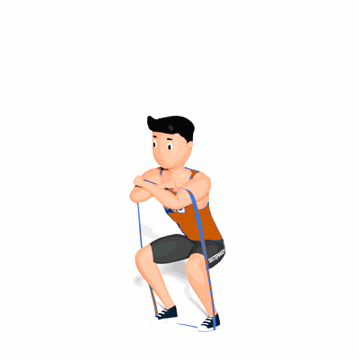

Agachamento Resistência com Faixa Elástica

O exercício sobrecarrega os glúteos e quadríceps em sua maior amplitude de movimento para melhorar a potência.
Ficha Técnica
Tipo: Funcional
Grupo Muscular: Perna
Aparelho: Nenhum
Músculos: Nenhum
Como realizar
- Fique com os pés afastados na largura dos ombros, dentro de uma faixa elástica solta;
- Agache-se o mais baixo possível sem levantar os calcanhares ou o tronco cair para a frente e enrole a extremidade solta da tira sobre os ombros;
- A partir daqui, passe pelos calcanhares para estender os quadris e os joelhos e ficar em pé;
- Pausa, então abaixe lentamente para baixo em um agachamento.
 RC STORE
RC STORE